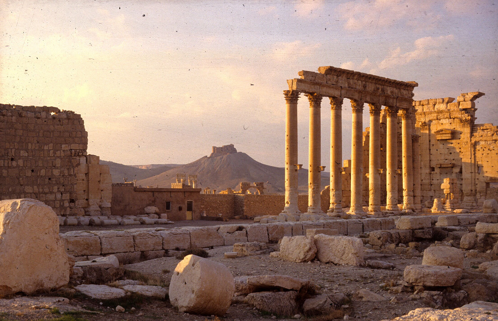

إنّ الحرب الأهلية الطاحنة في سورية المستعرة منذ أربعة أعوام وحتى الآن قد أدّت إلى حصول كارثة إنسانية هائلة الأبعاد فضلاً عن تهديد وتدمير عدد لا يحصى من الكنوز الثقافية في البلاد.
ينتمي المشهد الحضاري السوري من حيث الكمّ والأهمية التاريخية للمواقع الأثرية المنتشرة في أنحاء سورية إلى أهم المناطق المتميّزة على المستوى العالمي. تمثّل الأوابد التاريخية والأثرية في سورية جميع الفترات الزمنية بدءاً من الاستقرار البشري قبل حوالي مليون سنة من وقتنا الحاضر وحتى الفترة العثمانية وبذلك تمتلك سورية واحدةً من أكثر مجموعات المحفوظات الحضارية الطويلة الأمد شمولاً والتي لم تتمّ دراسة العديد من أجزائها الواسعة بشكلٍ علميٍ بعد. تمثّل حالات التدمير للمدن القديمة مثل حلب أو حمص بالإضافة إلى أعمال التنقيب غير المشروع واسعة النطاق في مواقعٍ أثريةٍ هامّةٍ القوى المحرّكة لعمليةٍ تقود إلى فقدانٍ لا رجعة فيه للأدلّة التاريخية الأكثر أهميةٍ في البلاد. في ظلّ هذه التطوّرات الدراماتيكية يهدف مشروع توثيق الإرث الحضاري السوري المُجرى من قبل قسم المشرق في معهد الآثار الألماني ومتحف الفنّ الإسلامي في برلين إلى وضع أُسسٍ من أجل إنشاءٍ مستقبليٍ لسجلٍّ وطنيٍ خاصٍّ بالإرث الحضاري السوري، حيث تمتلك هاتان الهيئتان معاً مخزوناً واسعاً من البيانات المتعلّقة بالإرث الحضاري السوري. إلّا أنّ العديد من هذه البيانات البحثيّة لا يزال حتى الآن محفوظاً بشكلٍ تناظريٍ فقط، يُعزى هذا الأمر إلى تأخّر استخدام البيانات الرقمية على نطاقٍ واسعٍ في علم الآثار، حيث لم يبدأ ذلك إلّا في أواخر التسعينيات من القرن الماضي. تُشكّل رقمنة مخزونات البيانات القديمة بالتالي شرطاً أساسيّاً لاستخدام هذه البيانات ودمجّها المفيد ضمن مشاريع إنشاء قواعد البيانات الكبيرة. لذلك تجري عملية رقمنة موارد المعلومات المهمّة هذه منذ عام ٢٠١٣ ضمن مشروعٍ مشتركٍ بين معهد الآثار الألماني ومتحف الفنّ الإسلامي وذلك بتمويلٍ من قبل برنامج الحفاظ على التراث الثقافي التابع لوزارة الخارجية الألمانية.
في هذا السياق يقوم فريقان ألمانيان ـ سوريان بالبحث عن البيانات الخاصّة بالأبحاث على نطاقٍ واسعٍ ورقمنتها ومن ثم وضعها في المجمع الرقمي الخاصّ بالأبحاث (iDAI.welt) التابع لمعهد الآثار الألماني حيث تتم إدارتها بشكل موحّد وبالتالي تأمينها بشكل مُستدام. بالإضافة إلى الهدف الأساسي المتمحور حول الحفظ الطويل الأمد لهذه المعرفة ونشرها فإنه يمكن الاستفادة من مجمع المعلومات الناتج عن ذلك كنقطة انطلاقٍ لتطبيقات مختلفة الأهداف: يمكن على سبيل المثال في إطار الجهود الرامية إلى الحفاظ على الإرث الحضاري الاستفادة من مجاميع البيانات ذات الصلة وذلك عن طريق استخدامها في تقييم الأضرار على الخرائط ومن ثم إتاحة استخدامها لاحقاً فيما يتعلّق بإجراءات إعادة الإعمار المستقبلية. بالإضافة إلى ذلك يمكن استخدام هذه البيانات في إنشاء قاعدةٍ لمراقبة سوق التحف الفنّية والتي يمكن أن تساعد في المستقبل في التعرّف الآلي على القطع الأثرية المهرّبة وذلك في إطار مكافحة الاتجار غير المشروع بالقطع الأثرية المسروقة أو الواردة من أعمال تنقيبٍ غير مشروعٍ.
يضمن تدفّق البيانات بين مختلف مكوّنات مركز البيانات التابع لمعهد الآثار الألماني استخداماً فعّالاً لبيانات الأبحاث. سوف يجري ضمن قاعدة البيانات الجغرافية iDAI.gazetteer ربط البيانات الأساسية (الصور والرسومات والنصوص) الموجودة في قاعدة بيانات القطع الأثرية iDAI.objects وفي قاعدة البيانات البيبلوغرافية iDAI.bibliography مع الخرائط الموجودة في قاعدة البيانات iDAI.geoserver وجعلها متاحة. إن الاستخدام الواسع النطاق لهذه البيانات ليس محصوراً فقط على العاملين ضمن هذا النظام. سيكون سجلّ الآثار هذا مرتبطاً أيضاً عبر وصلات قياسية دولية مع مشاريع مماثلة تهدف للحفاظ على التراث الحضاري السوري وبهذه الطريقة يساهم في إنشاء سجلٍّ وطني للمواقع الأثرية والتاريخية في سورية.
For additional information on the project also visit